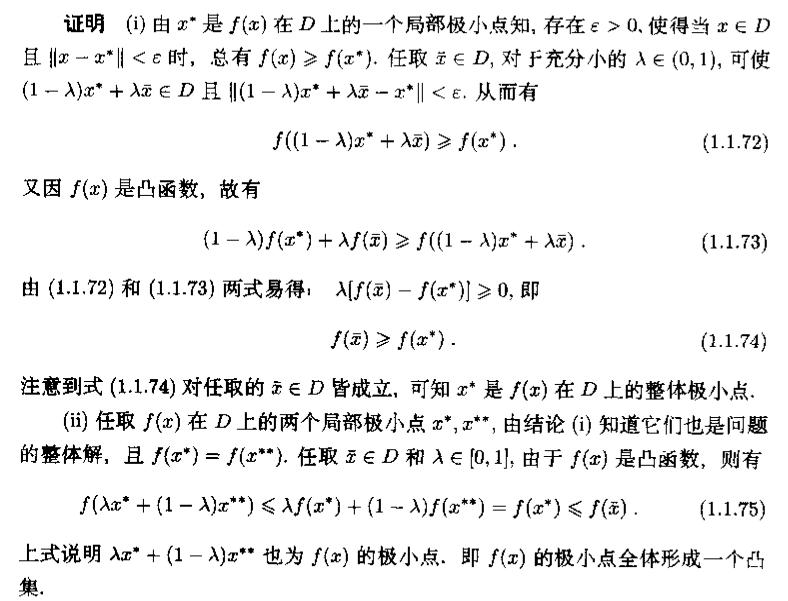
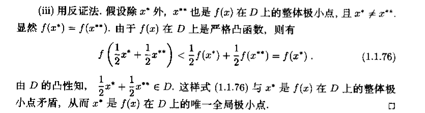

我们一般处理优化问题的时候（在得到这个数学表达形式的时候，可能需要一些变换）都希望将问题转换为凸优化问题，为什么转化为凸优化问题就能使问题变得简化呢？因为凸优化问题有一个特别好的特点：问题的局部解，一定是问题的最优解。
其实我一直想写一篇关于凸优化的blog，只不过每次想写的时候总觉得还欠点推论。（我不是数学专业的学生，反复的看数学相关的paper，反复的改，争取没有误解书中的理论。如果看完之后没有看懂，可以邮件给我回复。）
下面开始带你走进凸优化的世界。
1.最优化问题
1.1无约束问题
例如： $$ min f(x_1,x_2)=x_1^2+x_2^2 $$
$$ min f(x_1,x_2)=x_1^2+x_2^2 $$
1.1.1无约束问题的整体解
设 $$ x^* $$ 为全局最优解(以极小点为例)
$$ f(x^) < f(x)\quad \forall x\neq x^ $$
1.1.2无约束问题的局部解
设 $$ x^*\in\Re^n $$ 为局部解或局部最优解(以极小点为例)
存在 $$ \varepsilon>0 $$ 使得 $$ |x-x^*|< \varepsilon $$
总有
$$ f(x^)\leq f(x)\quad \forall x\neq x^ $$
1.2约束问题
1.2.1等式约束问题
例如： $$ min \quad f(x)\s\cdot t\quad c_i(x)=0,i=1,2\cdots p $$
p：为p个等式限制条件
1.2.2不等式约束问题
例如： $$ min \quad f(x)\s\cdot t\quad c_i(x)\leq0,i=1,2\cdots p $$
1.2.3一般约束问题
$$ min \quad f(x)\s\cdot t\quad c_i(x)\leq0,i=1,2\cdots p\ ;;;;;\quad c_i(x)=0,i=p,p+1\cdots p+q $$
1.2.4约束问题的整体解
设 $$ x^*\in D \quad D为可行域 $$ 为全局最优解(以极小点为例)都有
$$ f(x)\geq f(x^*) $$
当 $$ x\neq x^* $$
$$ f(x) > f(x^*) $$
1.2.4约束问题的局部解
设 $$ x^*\in D $$ 为局部解或局部最优解
存在 $$ \varepsilon>0 $$ 使得当
$$ x\in D \quad 且\quad|x-x^*|< \varepsilon $$
$$ f(x) > f(x^*) $$
到这个地方已经清楚了约束问题和无约束问题的形式和含义，但是目标函数和约束函数可以是任意的连续函数，对于这样的问题是很复杂的，而一类特殊的优化问题---凸优化问题就是SVM的核心
2凸最优化
2.1凸函数
$$ x_1,x_2\in S, \lambda \in(0,1) $$
$$ f(\lambda x_1+(1-\lambda)x_2)\leq \lambda f(x_1)+(1-\lambda)f(x_2) $$
2.2 凸约束问题
如果 $$ f(x) $$ 和 约束函数都为凸函数则问题为凸约束问题
$$ min \quad f(x)\s\cdot t\quad c_i(x)\leq0,i=1,2\cdots p\ ;;;;;\quad c_i(x)=0,i=p,p+1\cdots p+q $$
设D为问题的可行域 则：
- 若问题有局部解 $$ x^* $$ ，则 $$ x^* $$ 是问题的整体解
- 问题的整体解组成的集合是凸集
- 若问题优局部解 $$ x^* $$ , $$ f(x) $$ 是D上的严格凸函数，则 $$ x^* $$ 是问题的唯一整体解
证明过程如下：


1.凸函数（SVM函数九是一个凸函数）
1.满足kkt条件的二次约束规划所得到的局部最优解一定是全局最优解
2.全局最优解一定满足kkt条件
SVM基础
$$ margin=(d_+)+(d_-) $$
$$ Goal:Max{margin} $$
$$ d_+=\frac{|1-0|}{|w|}=\frac1{|w|} $$ ; $$ d_-=\frac{|0-(-1)|}{|w|}=\frac1{|w|} $$
$$ margin=d=\frac2{|w||} $$
$$ Goal=Max(\frac2{|w|}) $$
$$ {w^Tx_i+b\geq1 \quad ;;; if;y_i=+1\w^Tx_i+b\leq-1 \quad if;y_i=-1} $$
$$ y_i(w^Tx_i+b)\geq1\quad \forall i=1,2\cdots n $$
$$ margin=(d_+)+(d_-)=\frac2{|w|}=\frac2{\sqrt{w^Tw}} $$
$$ Max\rightarrow\frac2{\sqrt{w^Tw}} $$
$$ Min\rightarrow \frac12w^Tw $$
多一个 $$\frac12$$ 方便处理，这时问题转换为
$$ Min \quad \phi(w)=\frac12w^Tw\s \cdot t\quad y_i(w^Tx_i+b)\geq1\quad \forall i=1,2\cdots n $$
进一步处理为了后面的 lagrange multiplier 方便
$$ y_i(w^Tx_i+b)\geq1\quad \forall i=1,2\cdots n \quad 这个式子成立，对它做个变形\ \Rightarrow 1-y_i(w^Tx_i+b)\leq0\quad \forall i=1,2\cdots n $$
so 我们添加一个系数 $$ \alpha_i\geq0 $$ 使
$$ \alpha_i（1-y_i(w^Tx_i+b)\geq0\quad \forall i=1,2\cdots n $$
所以现在问题变为了
$$ L(w,b,\alpha)=\frac12w^Tw+\alpha_i[y_i(w^Tx_i+b)-1]\
\quad=\frac12w^Tw+\alpha_1[1-y_1(w^Tx_1+b)]+\alpha_2[1-y_2(w^Tx_2+b)]+\cdots+\alpha_n[1-y_n(w^Tx_n+b)]\
\quad=\frac12w^Tw-\alpha_1[y_1(w^Tx_1+b)-1]-\alpha_2[y_2(w^Tx_2+b)-1]-\cdots\alpha_n[1-y_n(w^Tx_1+b)]\
\quad=\frac12w^Tw-\sum_{i=1}^n\alpha_i[y_i(w^Tx_i+b)-1] $$
$$ \frac{\partial L(w,b,\alpha)}{} $$
$$ \nabla $$